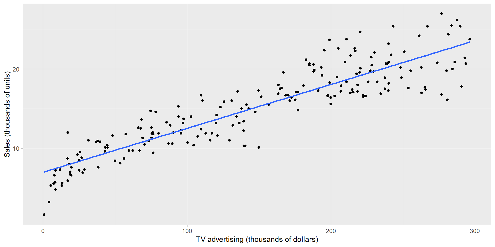
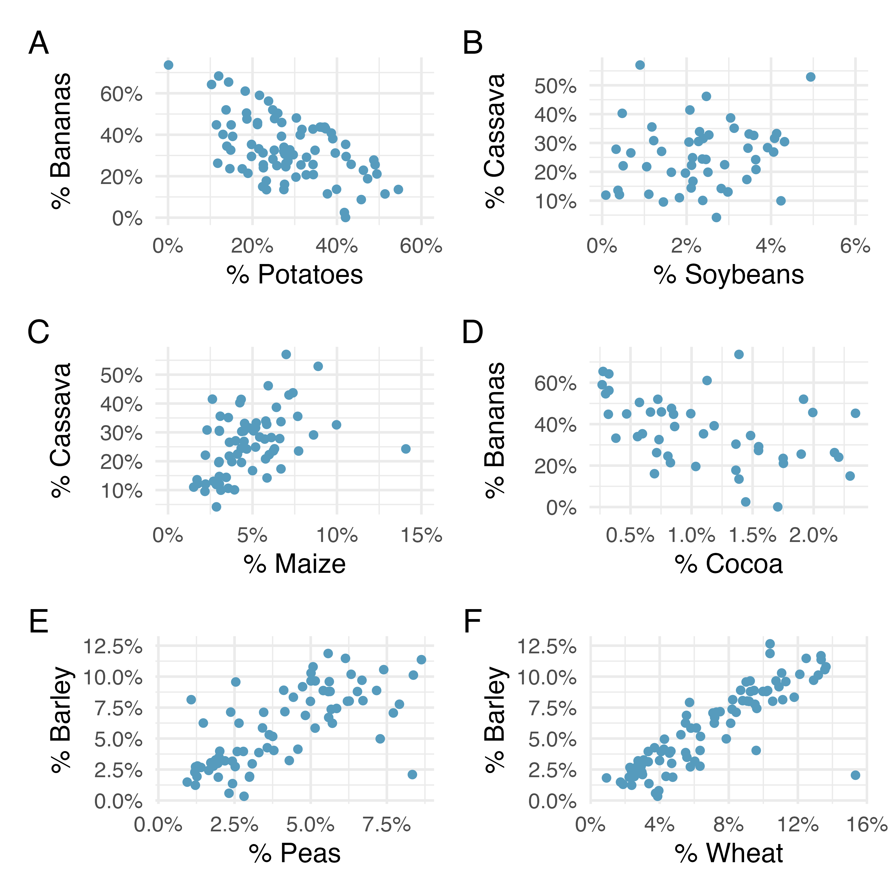
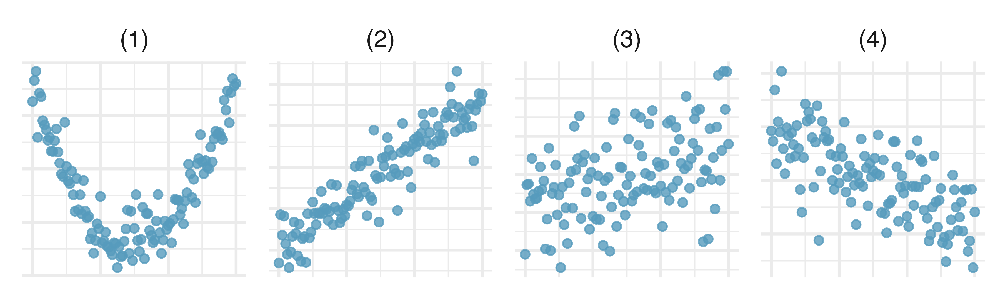

ECON 2B03, Winter 2026
Part D | Lecture 1
Chris Muris, McMaster University
Previously: Part C summary
Estimation:
Hypothesis testing:
Decisions under uncertainty:
Two-population inference:
Economics is full of questions about relationships between variables.
Simple linear regression gives us a summary line and a prediction rule for those relationships.
We will look at two examples:
Sales (thousands of units)TV, Radio, and Newspaper (thousands of dollars)TV spending move together. TV Radio Newspaper Sales
Min. : 0.70 Min. : 0.000 Min. : 0.30 Min. : 1.60
1st Qu.: 74.38 1st Qu.: 9.975 1st Qu.: 12.75 1st Qu.:11.00
Median :149.75 Median :22.900 Median : 25.75 Median :16.00
Mean :147.04 Mean :23.264 Mean : 30.55 Mean :15.13
3rd Qu.:218.82 3rd Qu.:36.525 3rd Qu.: 45.10 3rd Qu.:19.05
Max. :296.40 Max. :49.600 Max. :114.00 Max. :27.00 
Quick check
Before seeing any numeric output:
TV and Sales?
Call:
lm(formula = Sales ~ TV, data = adv_df)
Residuals:
Min 1Q Median 3Q Max
-6.4438 -1.4857 0.0218 1.5042 5.6932
Coefficients:
Estimate Std. Error t value Pr(>|t|)
(Intercept) 6.974821 0.322553 21.62 <2e-16 ***
TV 0.055465 0.001896 29.26 <2e-16 ***
---
Signif. codes: 0 '***' 0.001 '**' 0.01 '*' 0.05 '.' 0.1 ' ' 1
Residual standard error: 2.296 on 198 degrees of freedom
Multiple R-squared: 0.8122, Adjusted R-squared: 0.8112
F-statistic: 856.2 on 1 and 198 DF, p-value: < 2.2e-16The advertising spending variables are correlated with each other, so adding more predictors can change the partial slopes.
Quick check
Why does the Newspaper coefficient change when we add TV and Radio?
math score (Stanford 9 scale)str = students/teachers.Why does the slope matter?
district school county grades
Length:420 Length:420 Sonoma : 29 KK-06: 61
Class :character Class :character Kern : 27 KK-08:359
Mode :character Mode :character Los Angeles: 27
Tulare : 24
San Diego : 21
Santa Clara: 20
(Other) :272
students teachers calworks lunch
Min. : 81.0 Min. : 4.85 Min. : 0.000 Min. : 0.00
1st Qu.: 379.0 1st Qu.: 19.66 1st Qu.: 4.395 1st Qu.: 23.28
Median : 950.5 Median : 48.56 Median :10.520 Median : 41.75
Mean : 2628.8 Mean : 129.07 Mean :13.246 Mean : 44.71
3rd Qu.: 3008.0 3rd Qu.: 146.35 3rd Qu.:18.981 3rd Qu.: 66.86
Max. :27176.0 Max. :1429.00 Max. :78.994 Max. :100.00
computer expenditure income english
Min. : 0.0 Min. :3926 Min. : 5.335 Min. : 0.000
1st Qu.: 46.0 1st Qu.:4906 1st Qu.:10.639 1st Qu.: 1.941
Median : 117.5 Median :5215 Median :13.728 Median : 8.778
Mean : 303.4 Mean :5312 Mean :15.317 Mean :15.768
3rd Qu.: 375.2 3rd Qu.:5601 3rd Qu.:17.629 3rd Qu.:22.970
Max. :3324.0 Max. :7712 Max. :55.328 Max. :85.540
read math str
Min. :604.5 Min. :605.4 Min. :14.00
1st Qu.:640.4 1st Qu.:639.4 1st Qu.:18.58
Median :655.8 Median :652.4 Median :19.72
Mean :655.0 Mean :653.3 Mean :19.64
3rd Qu.:668.7 3rd Qu.:665.8 3rd Qu.:20.87
Max. :704.0 Max. :709.5 Max. :25.80
R: can you interpret it?
Call:
lm(formula = math ~ str, data = CA_df)
Residuals:
Min 1Q Median 3Q Max
-44.615 -13.374 -0.828 12.728 52.711
Coefficients:
Estimate Std. Error t value Pr(>|t|)
(Intercept) 691.4174 9.3825 73.692 < 2e-16 ***
str -1.9386 0.4755 -4.077 5.47e-05 ***
---
Signif. codes: 0 '***' 0.001 '**' 0.01 '*' 0.05 '.' 0.1 ' ' 1
Residual standard error: 18.41 on 418 degrees of freedom
Multiple R-squared: 0.03824, Adjusted R-squared: 0.03594
F-statistic: 16.62 on 1 and 418 DF, p-value: 5.467e-05str changes when we include the percentage of English learners.
Call:
lm(formula = math ~ str + english, data = CA_df)
Residuals:
Min 1Q Median 3Q Max
-48.230 -11.579 0.040 9.794 48.290
Coefficients:
Estimate Std. Error t value Pr(>|t|)
(Intercept) 680.1894 7.8751 86.373 <2e-16 ***
str -0.9129 0.4041 -2.259 0.0244 *
english -0.5655 0.0418 -13.528 <2e-16 ***
---
Signif. codes: 0 '***' 0.001 '**' 0.01 '*' 0.05 '.' 0.1 ' ' 1
Residual standard error: 15.37 on 417 degrees of freedom
Multiple R-squared: 0.3316, Adjusted R-squared: 0.3284
F-statistic: 103.4 on 2 and 417 DF, p-value: < 2.2e-16
Quick check
Which plot looks closest to zero correlation? Which looks strongest?
Exercise: scatter plot and linearity
A data set consists of eight \((x,y)\) pairs: \((0,12),(2,15),(4,16),(5,14),(8,22),(13,24),(15,28),(20,30)\).
Exercise: service call costs
The pricing schedule for an elevator repair call is CAD 150 plus CAD 50 per hour on site.
Exercise: correlation coefficient
For the sample data below:
| \(x\) | 1 | 3 | 4 | 6 |
|---|---|---|---|---|
| \(y\) | 4 | 1 | 3 | -1 |
Exercise: match the correlation (IMS 7.7)
Match each correlation to the corresponding scatterplot in the figure.

Match \(r=-0.7\), \(r=0.45\), \(r=0.06\), and \(r=0.92\) to the four plots.
These slides started from J. S. Racine’s slides for ECON2B03 at McMaster University.
Readings are from
References